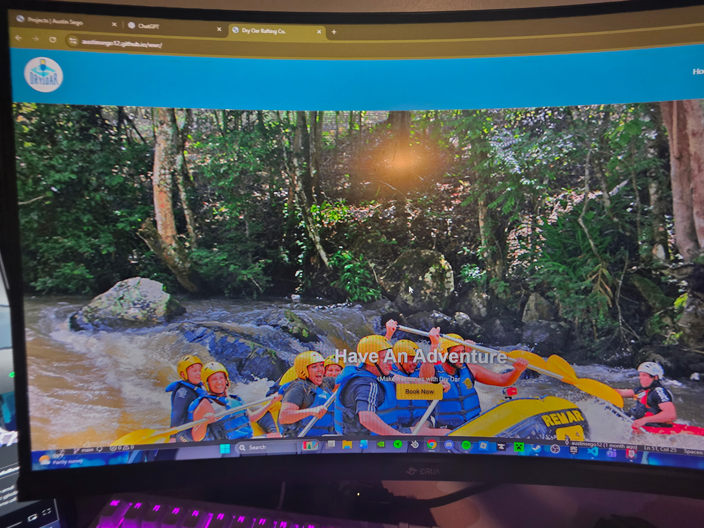
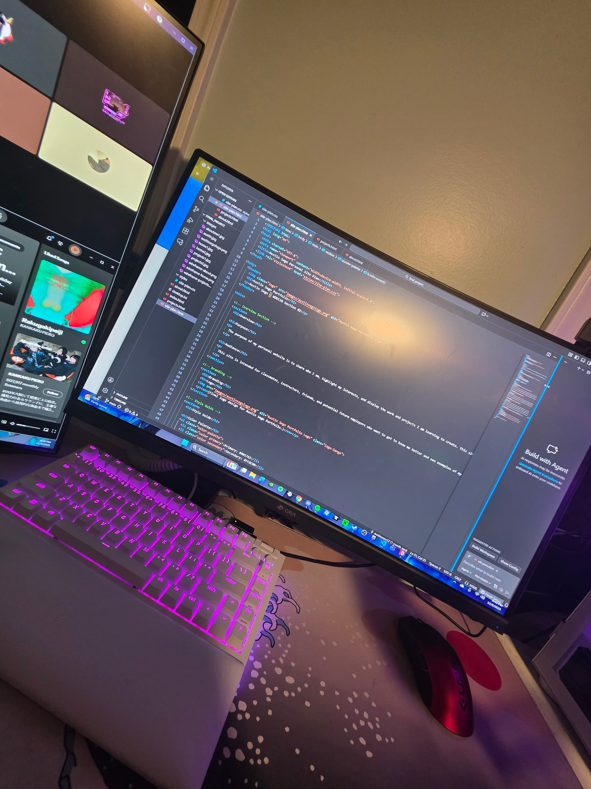

Projects Page

Project One
This project highlights my early work with design and development. I focused on learning layout structure, color theory, and responsive styling.

Project Two
This project demonstrates my understanding of coding fundamentals. It showcases organization, structure, and attention to detail.
Project Three
A deeper dive into creativity and problem-solving. This project helped develop my ability to design user-centered layouts.
Project Four
This project reflects growth in both technical and visual skills. The experience helped me improve precision and usability.